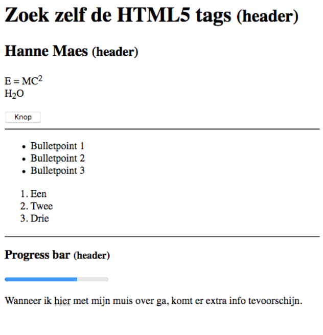

Wat doen deze HTML-tags?
<h1></h1>,<h2></h2>, …,<h6></h6><small></small><sup></sup><center></center><hr>
W3Schools & MDN
W3Schools en MDN zijn als de Wikipedia’s van webdesign
Zelfs professionele webdesigners gebruiken de websites W3Schools en MDN omdat ze nZelfs professionele webdesigners gebruiken de websites W3Schools en MDN omdat ze niet alle HTML-tags uit hun hoofd kennen. Ze raadplegen deze websites om nieuwe tags en technieken op te zoeken en bij te leren.iet alle HTML-tags uit hun hoofd kennen. Ook raadplegen ze deze websites om nieuwe tags en technieken op te zoeken en bij te leren.
Opdracht 01: Zoek zelf HTML-tags
Start met deze code:
<p>
E = MC2
<br>
H2O
</p>
<p>
Wanneer ik hier met mijn muis over ga, komt er extra info tevoorschijn.
</p>
Maak deze website na:
www
x

🤯
TIP
Gebruik nooit 2x <br> meteen na elkaar.
Hoe lang zal het duren om deze simple Hello world website te maken.
| Puntenverdeling: Zoek zelf html tags | |
|---|---|
| Headers 1 2 en 3 | 1 |
| De ‘(header)’ moet kleiner zijn dan de rest van de header tekst | 3 |
| De ‘2’ van ‘E = MC2’ moet hoger staan | 1 |
| De ‘2’ van ‘H2O’ moet lager staan | 1 |
| Knop | 1 |
| Twee horizontale lijnen | 1 |
| Een unordered list | 3 |
| Een ordered list | 3 |
| Een progress bar | 3 |
| Een abbreviation | 3 |
| Je maakt correct gebruik van de p en br tags | 4 |
| Totaal | 24 |
Uibreiding
- Laat de knop iets doen.
- Voeg een afbeelding toe.
- Voeg een video toe.
Opdracht 02: Afbeeldingen & video’s
- Maak een nieuwe website.
- Zoek via MDN of W3Schools hoe je afbeeldingen en video’s toe kan voegen aan je website.
- Daar zoek je 2 HTML-tags die we nog niet gezien hebben en voeg deze toe aan je website.
- Zoek het verschil op tussen de
<br>en<p></p>tags.
Leg op je website het verschil uitlegt en zorg ervoor dat je correct gebruikt maakt van deze tags. - Als laatste zoek je een website waarin je denkt dat de
<br>tag gebruikt is, je neemt er een screenshot van en plaats deze op je website, hetzelfde doe je voor de<p></p>tag.